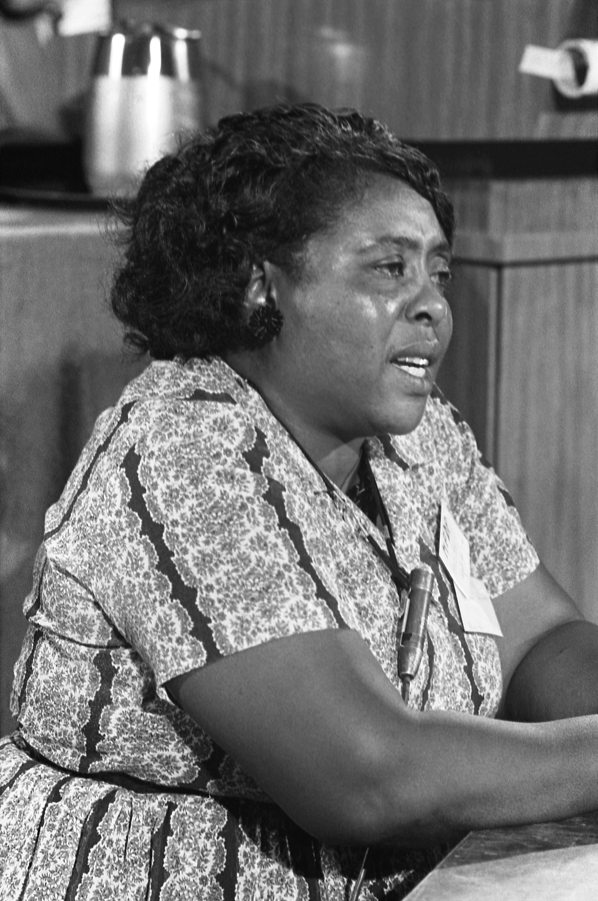

Directions: Fill in the chart as we study each part of the lesson. Keep this page in your notebook. You will use it again on the review day before the unit test.

| Step | The power created | Who held it | What it could not reach |
|---|---|---|---|
| The Senate fight, 1964 | |||
| The Civil Rights Act, 1964 | |||
| Freedom Summer and Atlantic City, 1964 | |||
| Selma, winter and spring 1965 | |||
| The Voting Rights Act, 1965 |
The two laws in one paragraph. Using at least three rows of the chart, write a paragraph that answers the lesson question. How did the movement turn protest into law, and what could the two great acts actually reach?
| Step | The power created | Who held it | What it could not reach |
|---|---|---|---|
| The Senate fight, 1964 | A statute at all: cloture, voted 71 to 29 on June 10 after a sixty-working-day filibuster, let the Senate pass the bill Kennedy had sent and Johnson had refused to weaken. | The Senate majority that could be assembled for cloture, including Republican votes, and a president who knew the chamber. | Nothing beyond the bill itself. The fight proved a law could be held for two months by a minority even after the House had passed it. |
| The Civil Rights Act, 1964 | Bans on discrimination in public accommodations and employment, and a federal funds cutoff for segregated programs under Title VI. | Every person and every worker, against establishments, employers, agencies, and unions, in federal court. | Private clubs, housing, and the registrar's desk, where the act left only county-by-county lawsuits. |
| Freedom Summer and Atlantic City, 1964 | An organized Mississippi constituency and a televised national argument that a delegation chosen with Black voters shut out could not speak for a state. | Local organizers and about a thousand volunteers, and the Freedom Democrats who carried the argument to the credentials committee. | The seats themselves. The party refused two at-large seats, and Chaney, Goodman, and Schwerner were murdered during the summer's registration work. |
| Selma, winter and spring 1965 | A crisis the federal government could not leave unanswered: Bloody Sunday on television, a presidential address in the movement's words, and a protected march to Montgomery. | The Selma organizers and marchers, whose witness moved the president and Congress; the federal court and troops that guarded the march. | Registration by witness alone. Dallas County's rolls changed only when the August act replaced the registrar's discretion with federal machinery. |
| The Voting Rights Act, 1965 | Suspended tests and devices in covered places, federal examiners registering voters directly, and preclearance of any voting change. | Every citizen under Section 2; the Attorney General and federal examiners working the machinery. | Places outside the coverage formula, and the fields the whole file marks: housing, wealth, and equality as a result. |
The two laws in one paragraph. Strong answers run the chart as one sequence. Protest supplied the pressure and the evidence, in Mississippi registration lines and on the Edmund Pettus Bridge, and mastery inside the Senate supplied the votes, cloture in 1964 and a voting bill carried through in 1965. The acts reached public accommodations, employment, federal funds, and the registrar's desk, where the 1965 machinery registered a quarter of a million new Black voters by the end of that year. They could not reach housing, private clubs, wealth, or equality as a result, the limit Johnson named at Howard University. A paragraph that lists the acts without the protest, or the protest without the Senate, has answered half the lesson question.